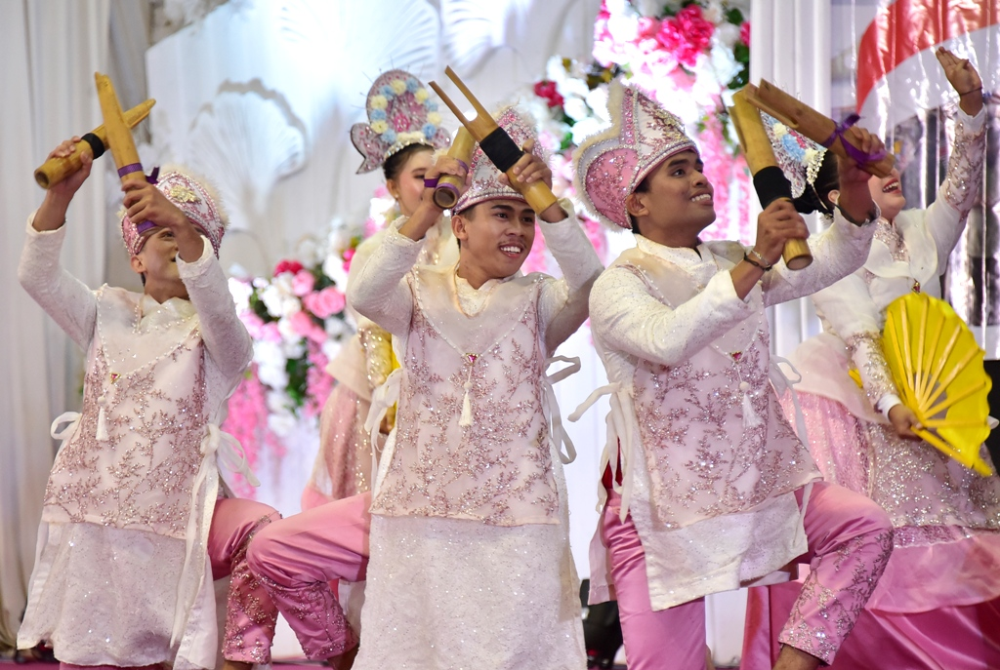

Sejarah dan Makna
Tarian Polopalo adalah salah satu tarian tradisional dari Gorontalo yang terkenal dengan irama dinamis dan gerakan yang penuh semangat. Nama "Polopalo" berasal dari alat musik yang digunakan dalam tarian ini, yang terbuat dari bambu dan menghasilkan suara khas saat dipukul.

Ciri Khas Tarian Polopalo
- Gerakan energik yang mengikuti irama alat musik Polopalo.
- Sering ditampilkan dalam acara adat dan perayaan budaya.
- Penari menggunakan pakaian tradisional khas Gorontalo.
- Alat musik Polopalo dimainkan dengan cara dipukul di antara kedua lutut.
Fungsi dan Tujuan
Tarian Polopalo memiliki berbagai fungsi dalam masyarakat Gorontalo, di antaranya:
- Sebagai hiburan dalam acara budaya dan festival seni.
- Digunakan untuk menyambut tamu kehormatan dalam upacara adat.
- Merepresentasikan identitas budaya dan warisan leluhur masyarakat Gorontalo.
Keunikan Tarian Polopalo
Ada beberapa hal unik yang membuat Tarian Polopalo berbeda dari tarian lainnya di Indonesia:
- Alat musik yang digunakan adalah bambu khusus yang hanya ditemukan di daerah Gorontalo.
- Memadukan unsur gerakan tradisional dengan ritme musik yang modern.
- Interaksi antara penari dan alat musik menciptakan harmoni yang menarik untuk disaksikan.